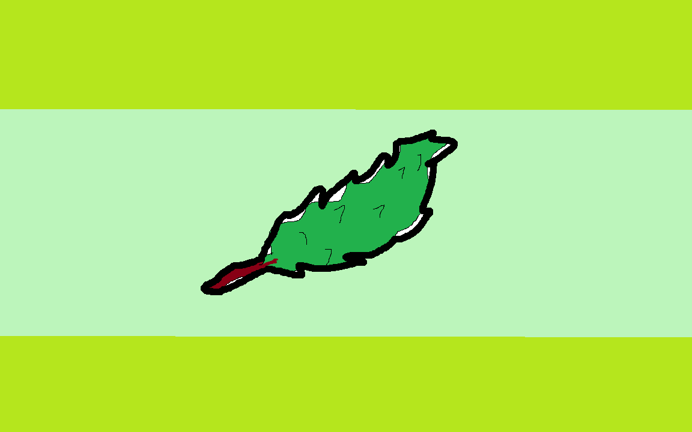
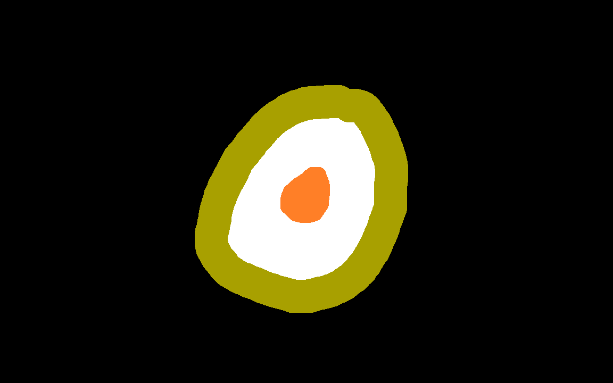
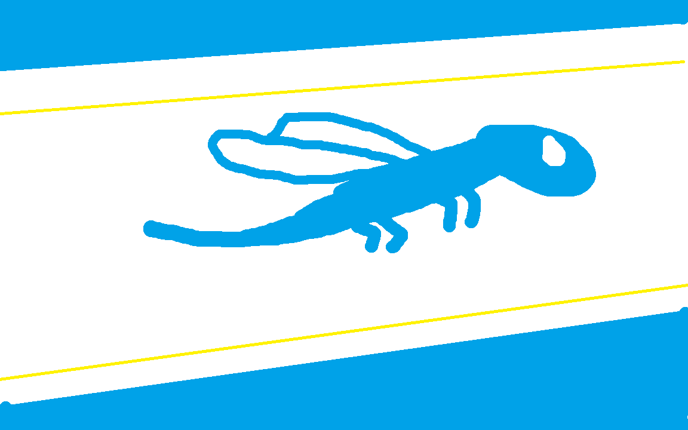
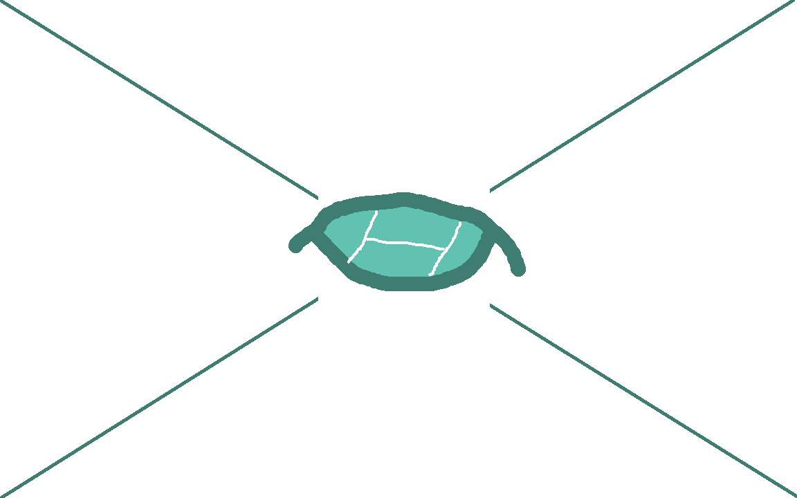

loading...
このページは、プロ野球ファンである私が個人的にKKUの選手成績を
まとめたものになります。
データの正確性は保証できませんので使用される際にはご注意ください。
また、ポジションは最も多く着いたものを表示しています。
輪島オオムギワカバーズ
蓼科ボイルドエッグス


打者成績 打者成績豊橋ドラゴンフライズ
米沢ホワイトハッカーズ


打者成績 打者成績 個人投手成績はこちらにまとめてあります